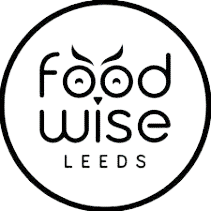
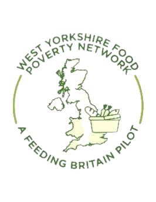

Emergency Food
Find food banks, food aid providers, community kitchens, drop-ins and urgent support in Leeds.
Find food supportLeeds Food Aid Network helps people find emergency food, low cost food, advice and ways to donate across Leeds.


If you are looking for food support, start with the emergency food page. It includes food banks, community kitchens, drop-ins and other support options.
Go to emergency food supportFind food banks, food aid providers, community kitchens, drop-ins and urgent support in Leeds.
Find food supportFind information about affordable food, meals, shopping advice and community food support.
Find low cost foodLearn how to donate food and essential items to support organisations helping people in Leeds.
Donate food or itemsFind contact information, mailing list details and links to advice about money, health, welfare and other support.
Contact us Advice and supportLeeds Food Aid Network brings together food providers, support organisations, local institutions and members of the public who are involved in tackling food poverty in Leeds.
The network helps connect people to food aid, supports communication between organisations and signposts users towards longer-term support.
Learn more about the networkThis document explains how food insecurity was addressed in Leeds during the pandemic and provides background context for the network’s work.
Open the document
The original Leeds FAN diagram explains three important parts of food aid work: signposting people to food providers, distributing food to projects, and connecting people to longer-term support.
Helping people find suitable food providers and support services.
Connecting food suppliers, supermarkets and donors with food aid providers.
Linking people to advice, welfare support, health services and community groups.